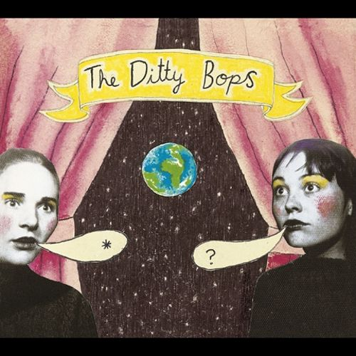

The Ditty Bops
Folk, Swing, Bluegrass / October 26, 2004
12 songs, 36:09 minutes
| Song | Album | Duration | |
|---|---|---|---|
| 1 | Walk Or Ride | The Ditty Bops | 3:11 |
| 2 | Wishful Thinking | The Ditty Bops | 2:39 |
| 3 | Ooh La La | The Ditty Bops | 3:53 |
| 4 | Sister Kate | The Ditty Bops | 2:25 |
| 5 | Breeze Black Night | The Ditty Bops | 2:58 |
| 6 | Gentle Sheep | The Ditty Bops | 3:24 |
| 7 | Pale Yellow | The Ditty Bops | 2:46 |
| 8 | Four Left Feet | The Ditty Bops | 2:48 |
| 9 | There's A Girl | The Ditty Bops | 3:02 |
| 10 | Unfortunate Few | The Ditty Bops | 4:02 |
| 11 | Short Stacks | The Ditty Bops | 2:36 |
| 12 | Wake Up | The Ditty Bops | 2:25 |
Moon Over The Freeway
Swing, Ragtime, Folk / May 23, 2006
13 songs, 37:25 minutes
| Song | Album | Duration | |
|---|---|---|---|
| 1 | Moon Over The Highway | Moon Over The Highway | 3:15 |
| 2 | Angel With An Attitude | Moon Over The Highway | 2:31 |
| 3 | Fall Awake | Moon Over The Highway | 3:40 |
| 4 | Aluminum Can | Moon Over The Highway | 3:28 |
| 5 | Fish to Fry | Moon Over The Highway | 3:09 |
| 6 | In The Meantime | Moon Over The Highway | 2:39 |
| 7 | It's A Shame | Moon Over The Highway | 2:18 |
| 8 | Waking Up In The City | Moon Over The Highway | 3:15 |
| 9 | Growing Upside Down | Moon Over The Highway | 2:48 |
| 10 | Get Up 'N' Go | Moon Over The Highway | 2:12 |
| 11 | Bye Bye Love | Moon Over The Highway | 2:33 |
| 12 | Nosy Neighbor | Moon Over The Highway | 3:04 |
| 13 | Your Head's Too Big | Moon Over The Highway | 2:33 |